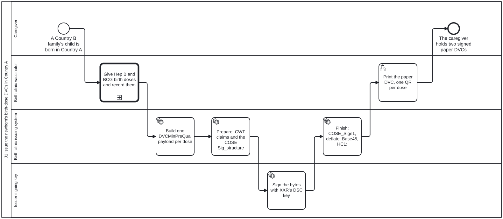
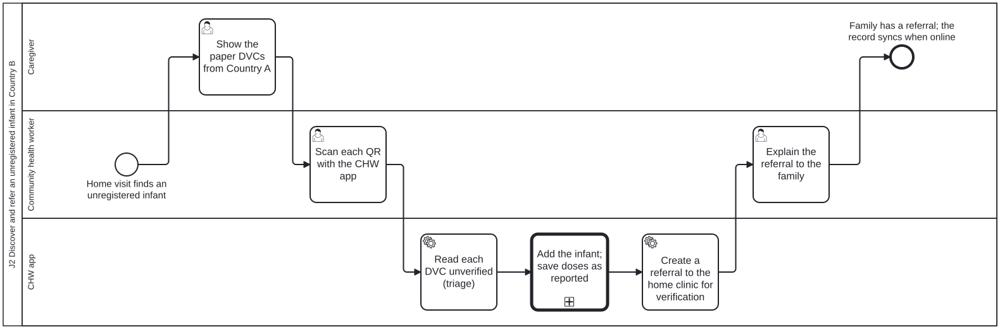
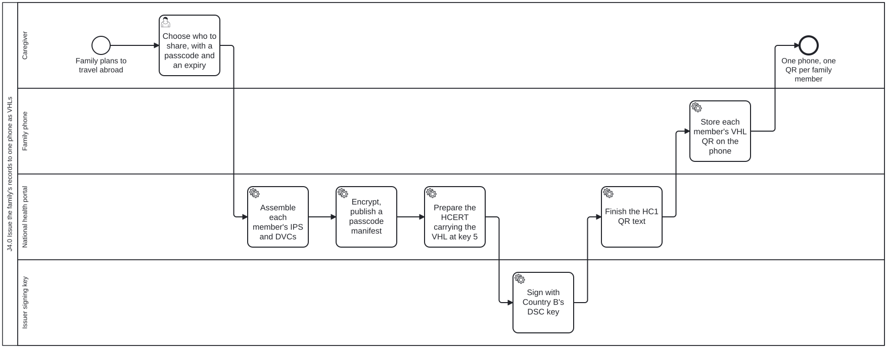

每个旅程一个业务流程。每条泳道是人物画像页面上的一个角色；每个任务都注明执行它的技能。每个流程的 BPMN 源文件位于 processes/content/，以 input/business-processes/ 的形式复制到本指南中。选择某个步骤的标题即可打开它，或在流程查看器中打开一个流程，查看器会列出每个任务及执行它的技能。
| 流程 | 泳道 | BPMN |
|---|---|---|
| J1 在 A 国签发新生儿出生剂次 DVC | 照护者、出生诊所疫苗接种员、出生诊所签发系统、签发方签名密钥 | j1-birth-dose-dvc.bpmn |
| J2 在 B 国发现并转诊未登记婴儿 | 照护者、社区卫生工作者、CHW 应用 | j2-chw-discovery-referral.bpmn |
| J3 在所属诊所验证、导入并制定接种计划 | 照护者、所属诊所提供者、所属诊所 EHR | j3-clinic-verification-schedule.bpmn |
| J4.0 将家庭记录以 VHL 形式签发到同一部手机 | 照护者、国家健康门户、签发方签名密钥、家庭手机 | j4-0-family-vhl-issuance.bpmn |
| J4.1 在境外医疗服务点读取家庭成员的记录 | 照护者、家庭手机、医疗服务点提供者、医疗服务点接收方、国家健康门户 | j4-1-vhl-point-of-care.bpmn |
J1 在 A 国签发新生儿出生剂次 DVC

流程 id Process_J1BirthDoseDvc。在流程查看器中打开。
J1，跨境出生与首次疫苗接种。在 A 国（XXR，出生国），省级医院为一名非本国国民的新生儿接种乙肝（Hep B）和卡介苗（BCG）出生剂次，并为每一剂次签发一份已签名的 DVC（子声明 -6 处的 DVCMinPreQual），以纸质 QR 码形式提供，无需国民身份证号（WHO 指南“QR Code Generation”第 12 节的示例就是这样一对）。医院系统是签发方（Issuer，SMART Trust），也是 VHL 共享方（VHL Sharer）的 HCERT 一侧；私钥保留在密钥持有者处（两阶段签名，STT-ISS-004、STT-COS-006）。XXR 的 DSC（隶属其 CSCA）已列入 GDHCN 信任列表，这是签发的前提条件（PRECONDITION），在下文声明，而非一个步骤。照护者是持有人（Holder，SMART Trust、smart-trust-phw）和 VHL 持有人（VHL Holder，IHE ITI VHL）。
任务检查清单：j1-birth-dose-dvc.checklist.md。
J2 在 B 国发现并转诊未登记婴儿

流程 id Process_J2ChwDiscovery。在流程查看器中打开。
J2，回国、CHW 发现与转诊。回到家庭居住的 B 国（本国，XXK）后，社区卫生工作者在一次家访中发现一名在境外出生、未列入家庭成员名册的婴儿。在离线状态下，CHW 应用将该婴儿添加到家庭中（一个 FHIR Group，通过结构化数据采集表单），读取境外 DVC 但不验证（read-unverified，STT-VER-011：分诊读取在信任查询之前停止，并将每个字段标记为未验证），将剂次保存为家庭报告、未经验证（Immunization.primarySource 为 false），并将婴儿转诊至诊所进行验证。所有内容都在手机上排队，待下次有信号时同步。CHW 应用是一个接收方（Receiver，SMART Trust、smart-trust-phw），它有意在信任环节之前停止；照护者作为持有人提供 VDHC（smart-trust-phw 需求 provide-a-vhl-to-a-receiver）。
任务检查清单：j2-chw-discovery-referral.checklist.md。
J3 在所属诊所验证、导入并制定接种计划

流程 id Process_J3ClinicVerification。在流程查看器中打开。
J3, Clinic verification and schedule generation, in Country B. The clinic EHR (Receiver in SMART Trust and smart-trust-phw, VHL Receiver side in IHE ITI VHL) holds a copy of the GDHCN trust list, which the trust anchor (Trust Network Anchor; IHE Trust Anchor) distributes and Country B, a Trust Network Participant, retrieves (smart-trust-phw retrieve-pki-material). Loading the DID documents is a PRECONDITION of this visit, not a step in it: the clinic may be offline throughout, so the list it verifies against is the one it last refreshed, about weekly, when the CHW visits the base clinic or district health office. It verifies each foreign DVC in the STT-VER-001 order against XXR’s DSC DID document, imports the verified doses with provenance, adds the national schedule code beside each foreign vaccine code (ConceptMap; the nurse decides any product with no mapping) and evaluates the national schedule, which finds the 6-week doses due and books them.
任务检查清单：j3-clinic-verification-schedule.checklist.md。
J4.0 将家庭记录以 VHL 形式签发到同一部手机

流程 id Process_J40FamilyVhl。在流程查看器中打开。
J4.0，家庭出境旅行，“一个家庭，一部手机”。出行前，持有家庭共用手机的照护者向 B 国国家门户申请每位家庭成员的记录，并为每份记录选择一个家人可以口头说出的通行码和一个有效期（例如 14 天）；门户将这一选择记录为持有人的共享同意（FHIR Consent，IHE Privacy Consent on FHIR）。该门户作为 VHL 共享方（VHL Sharer，IHE ITI VHL）和签发方（Issuer，SMART Trust、smart-trust-phw），为每位成员签发一个受通行码保护的可验证健康链接（VHL）：文档（IPS、DVC）以 JWE 加密（STT-VHL-007），置于 ITI-YY5 清单之后；链接采用 SMART Health Links 载荷格式，位于 HCERT 键 5（STT-VHL-001、STT-VHL-002），并以 B 国的 DSC 签名。共用手机为照护者（即 VHL 持有人）保存这些 QR 码。记录本身仍托管在 B 国：QR 码只携带一个指针和一个密钥。
任务检查清单：j4-0-family-vhl-issuance.checklist.md。
J4.1 在境外医疗服务点读取家庭成员的记录

流程 id Process_J41VhlFetch。在流程查看器中打开。
J4.1。在境外，家中一名孩子需要就医。照护者，即 VHL 持有人（IHE ITI VHL；在 SMART Trust 和 smart-trust-phw 中为持有人，需求 provide-a-vhl-to-a-receiver），在家庭手机上打开她的 QR 码并说出通行码。医院系统作为 VHL 接收方（在 SMART Trust 和 smart-trust-phw 中为接收方），依据 GDHCN 信任列表验证 HCERT，通过 ITI-YY5 并附带 HTTP 消息签名（HTTP Message Signature）请求清单（STT-VHL-005、STT-VHL-006、STT-VHL-008），并解密文档（STT-VHL-007）。B 国门户核验通行码、返回清单，并将每一次请求（无论允许或拒绝）作为 AuditEvent 记录在本国（IHE BALP）。如果 HCERT 未通过验证，则不进行数字验证：不跟随该 VHL，记录按纸质记录对待。与 J3 一样，加载 DID 文档是本次就诊的前提条件（PRECONDITION），而非其中的一个步骤：医院依据其缓存的信任列表副本进行验证，无需联网。它每晚或每小时刷新该缓存，而 J3 诊所这类离线站点大约每周刷新一次。